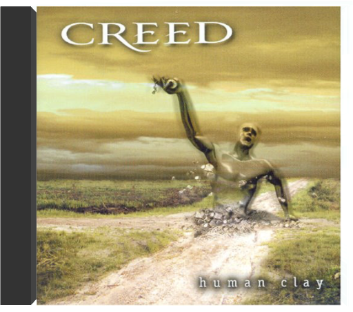
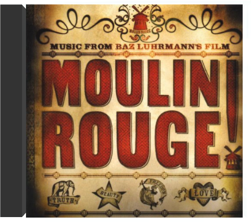
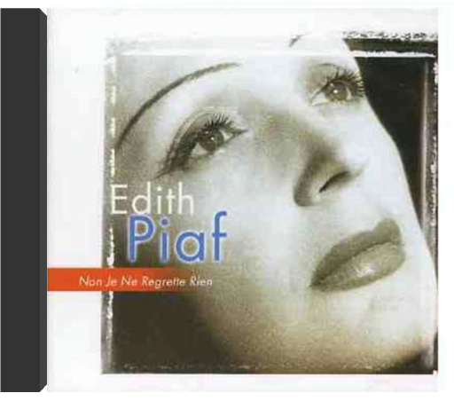

Human ClayCreed  Aussie edition of the hit American alternative rock act's second album with the bonus track, 'Young Grow Old'. 12 tracks total, also featuring the single 'Higher'. 1999. Moulin Rouge! Music from Baz Luhrmann's FilmDavid Bowie, Christina Aguilera, Lil' Kim, Mýa, Pink, Fatboy Slim UK reissue of the hit soundtack combines volumes one, 'Moulin Rouge' (Original Soundtrack) (2001) & 'Moulin Rouge, Vol. 2' (2002) in one package. Two standard jewel cases housed in a slipcase. 2002.  Classic Disney, Vol. 1: 60 Years of Musical MagicDisney Classic Disney, Vol. 1: 60 Years of Musical MagicDisney The first volume of a series that collects the greatest songs from classic Disney productions like Mary Poppins, Beauty & The Beast, The Lion King, Aladdin, The Little Mermaid, Dumbo, Snow White & The Seven Dwarfs, Cinderella and many more. Non Je Ne Regrette RienEdith Piaf All products are BRAND NEW and factory sealed. Fast shipping and 100% Satisfaction Guaranteed. Glorious Five Year PlanEnola Fall All products are BRAND NEW and factory sealed. Fast shipping and 100% Satisfaction Guaranteed.  In Between DreamsJack Johnson In Between DreamsJack Johnson "In Between Dreams" is the multi-platinum selling smash from Jack Johnson. The album features classics like "Banana Pancakes", "Better Together" and "Good People". |


 Made with Delicious Library
Made with Delicious LibrarySpringfield, State zipflap congrotus delicious library Doddridge, Edward